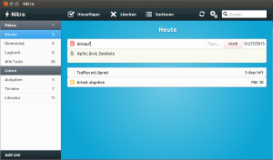

Nitro
Dieser Artikel wurde für die folgenden Ubuntu-Versionen getestet:
Ubuntu 16.04 Xenial Xerus
Ubuntu 14.04 Trusty Tahr
Zum Verständnis dieses Artikels sind folgende Seiten hilfreich:
Nitro  (Nitro Tasks) ist eine Anwendung zur Aufgabenplanung. Sie wird von Caffeinated Code entwickelt und steht unter der BSD-Lizenz. Im Stile einer To-do-Liste lassen sich Aufgaben, Termine und Ähnliches organisieren und synchronisieren. Bei Bedarf ergänzt man Tags, Notizen, Prioritäten und das Fälligkeitsdatum. Darüber hinaus bringt Nitro automatische Sortieroptionen mit und synchronisiert die Daten über Cloud-Dienste. Die Anwendung ist für Linux, Mac OS X, Google Chrome OS und als Web-App verfügbar.
(Nitro Tasks) ist eine Anwendung zur Aufgabenplanung. Sie wird von Caffeinated Code entwickelt und steht unter der BSD-Lizenz. Im Stile einer To-do-Liste lassen sich Aufgaben, Termine und Ähnliches organisieren und synchronisieren. Bei Bedarf ergänzt man Tags, Notizen, Prioritäten und das Fälligkeitsdatum. Darüber hinaus bringt Nitro automatische Sortieroptionen mit und synchronisiert die Daten über Cloud-Dienste. Die Anwendung ist für Linux, Mac OS X, Google Chrome OS und als Web-App verfügbar.
Ein weiteres Programm aus dem gleichen Haus ist Springseed , eine Notizbuch-Software.
Installation¶
Nitro ist nicht in den offiziellen Paketquellen enthalten. Die Installation [1] des Programms ist über das Software-Center von Ubuntu (nitro) (Ubuntu 12.04 bis Ubuntu 14.04), das "Personal Package Archiv" (PPA) [2] der Entwickler (bis Ubuntu 13.10) oder als Fremdpaket (ab Ubuntu 15.10) möglich.
PPA¶
Adresszeile zum Hinzufügen des PPAs:
ppa:cooperjona/nitrotasks
Hinweis!
Zusätzliche Fremdquellen können das System gefährden.
Ein PPA unterstützt nicht zwangsläufig alle Ubuntu-Versionen. Weitere Informationen sind der  PPA-Beschreibung des Eigentümers/Teams cooperjona zu entnehmen.
PPA-Beschreibung des Eigentümers/Teams cooperjona zu entnehmen.
Damit Pakete aus dem PPA genutzt werden können, müssen die Paketquellen neu eingelesen werden.
Nach dem Aktualisieren der Paketquellen kann folgendes Paket installiert werden:
nitrotasks (ppa)
 mit apturl
mit apturl
Paketliste zum Kopieren:
sudo apt-get install nitrotasks
sudo aptitude install nitrotasks
Manuell¶
Man lädt das Fremdpaket nitrotasks_1.5.1_all.deb  herunter und installiert es manuell [3].
herunter und installiert es manuell [3].
Hinweis!
Fremdpakete können das System gefährden.
Bedienung¶
|  |
| Programmfenster von Nitro |
Bei der Installation wird automatisch ein Programmstarter [4] für das Unity Startmenü bzw. die GNOME Shell erstellt. Ubuntu-Varianten mit einem Anwendungsmenü finden diesen Eintrag unter "Büro -> Nitrotasks application".
Listen und Elemente hinzufügen¶
Um eine eigene Liste hinzuzufügen, klickt man auf "Add List" im Programmfenster unten links. Neue Aufgaben trägt man über "Add" in der oberen Menüzeile in eine der Listen ein.
Daten synchronisieren¶
Listen und Aufgaben lassen sich über den Cloud-Dienst Dropbox mit anderen Geräten synchronisieren. Beide setzen eine Anmeldung auf der jeweiligen Webseite voraus. Die entsprechenden Einstellungen in Nitro nimmt man über den Menüpunkt "View -> Preferences -> Sync" vor. Hier entscheidet man sich für einen der beiden Dienste und gibt bei der Abfrage seine Login-Daten ein. Einmal verbunden, gibt man im gleichen Einstellungsfenster an, ob die Synchronisation automatisch, manuell oder aber nie durchgeführt werden soll.
Liste der Tastenkürzel¶
| Tastenkürzel | |
| Kürzel | Funktion |
| Strg + N | neues Element hinzufügen |
| Strg + S | Daten synchronisieren |
| Strg + , | Einstellungen aufrufen |
| Strg + 1 | heute fällige Aufgaben anzeigen |
| Strg + 2 | demnächst fällige Aufgaben anzeigen |
| Strg + 3 | Logbuch der erledigten Aufgaben anzeigen |
| Strg + 4 | alle Aufgaben anzeigen |
| Strg + Q | Programm schließen |
Problembehandlung¶
Nitro merkt sich Fenstergröße nicht¶
Unter Ubuntu kann es vorkommen, dass sich Nitro die eingestellte Fenstergröße nicht merkt und bei Neustart der Anwendung die Standardgröße wiederherstellt. Um eine feste Fenstergröße einzustellen, editiert [5] man die Datei /opt/nitro/share/nitrotasks/ui/NitrotasksWindow.ui bzw. /usr/share/nitrotasks/ui/NitrotasksWindow.ui mit Root-Rechten [6]. Hier ändert man folgende Werte nach den persönlichen Vorlieben und gibt zum Beispiel die Auflösung des eigenen Bildschirms ein, um Nitro maximiert zu starten:
<property name="default_width">1600</property> <property name="default_height">900</property>
Anschließend speichert man das Dokument ab und startet Nitro neu, um die Änderungen anzuwenden.
 Programmübersicht
Programmübersicht- Erstellt mit Inyoka
-
 2004 – 2017 ubuntuusers.de • Einige Rechte vorbehalten
2004 – 2017 ubuntuusers.de • Einige Rechte vorbehalten
Lizenz • Kontakt • Datenschutz • Impressum • Serverstatus -
Serverhousing gespendet von